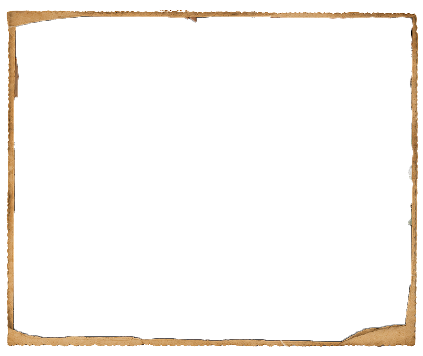
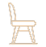

추억의 빈티지 공간
학림다방


“ 역사와 전통이 살아있는 공간 “


1956년 문을 연 학림다방은 약 70년의 역사를 간직한 서
울의 대표적인 다방이다.내부에는 오래된 원목 가구와 클
래식한
조명, 빈티지
소품들이 그대로 남아있어 과거의 분
위기를 생생하게 느낄 수 있다. 지금도 많은 사람들이 레트
로 감성을 경험하기 위해 찾는 명소입니다.
70년의 역사
1556년부터 이어진
서울의 다방
서울의 다방

옛 다방의 모습
오래된 원목 가구와
클래식한 실내 공간
클래식한 실내 공간
예술가의 사랑방
대학생과 문학인, 예술가
들이 머물던 공간
들이 머물던 공간
시간이 멈춘 공간
오랜 세월의 흔적이 고스
란히 남아있는 다방
란히 남아있는 다방
운영시간
10:00 - 23:00

연락처
02-742-2877
 1 (1).png)
주소
서울 종로구 명륜4가
94-2